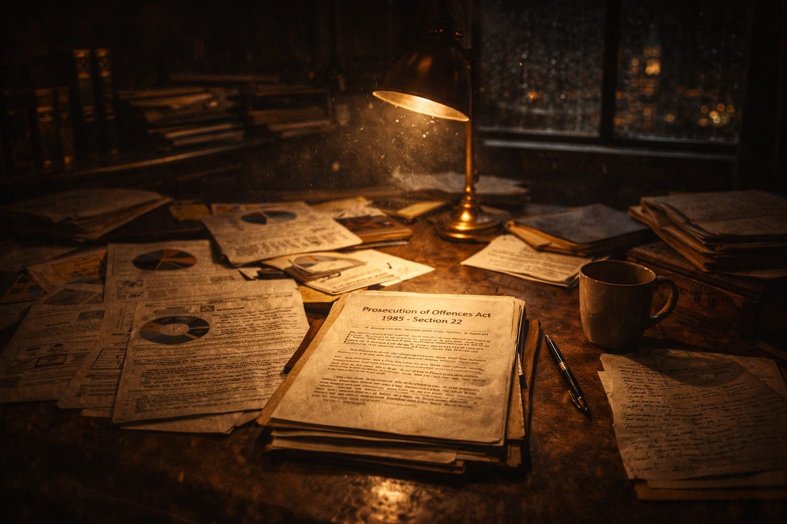

If I was to land blows on those in the prosecutorial chain, I needed a vehicle with which to travel into gangland crime. My practice was busy, but it was centred upon the daily fodder dished up in Halifax Magistrates Court.My eyes latched onto Section 22 of The Prosecution of Offences Act 1985, which provided:
“The appropriate court may, at any time before the expiry of a time limit imposed by the regulations, extend, or further extend, that time limit if it is satisfied -
that there is good and sufficient cause for doing so; and
that the prosecution has acted with all due expedition.”
The custody time limit in the Magistrates’ being 70 days, by which date the case should have been sent or ‘committed’ to Crown Court. This legislation was rooted in basic human rights, whereby a citizen detained in custody should be provided with his case papers by the State. Someone should not be in a prison cell indefinitely, without being provided with the evidence underpinning his incarceration. It is only by service of the Crown’s case papers, can a defence legal team argue they do not disclose a case and the prosecution should end.
I would trust we can all agree this burden is no more than a properly functioning and democratic society demands. It is rooted in Article 5 of the European Convention on Human Rights which provides that every citizen deprived of their liberty must have their trial within a reasonable time. 70 long, depressing days spent 22 hours in a cell is hardly a short spell for police and CPS to get their acts together.
Given CPS had advised charges could be laid at the outset based on evidence presented by the police, the collation of witness statements and exhibits should be a speedy process. To pass the CPS charging criteria, the evidence must be powerful enough for a CPS reviewing lawyer to assess it has a reasonable prospect to secure a conviction if placed before a jury. It is common sense that the majority of evidence will stem from pre-arrest activity and, hence, should be “in the bag”.
The reality on the ground was such that when a police Operation ended with arrests, the coppers would immediately be assigned to other cases. Their target would be in a prison cell – out of sight and out of mind. In turn, the CPS would trundle along with their daily caseloads, without a mont’s thought to keep on top of the statutory requirement to act with “all due expedition”.
This was no more than lip service being given to the custody time limit (CTL) legislation. It would generally be somewhere between the 66th and 68th day before the case papers would land on defence lawyers’ desks. It was being accepted that such service was CTL compliant, simply because it was within the 70th day time limit.
In courts all over England and Wales, defence lawyers were accepting (in fact, asking) for the CTL to be extended, in order that they could view and take instructions on the case papers. If a decision was made to challenge the Crown as to whether there was a case to answer, the listing of the case would often be after the 90th day.
In my judgment, this was flawed as, if the CTL was to carry weight and sanction, it must require the papers be served to ensure a ‘no case’ challenge could be mounted within the 70 days.
Why was this sparking my interest? Why did I feel this could catapult me into gangland crime? The answer was a simple one – if a Magistrates Court refused to extend the CTL, the accused had to be released from custody. No ‘ifs’ or ‘buts’ and it did not matter how heinous the crimes which an accused was to face. Bail was automatic.
The burden on the CPS was not one in which they had to serve all the evidence swiftly. They only had to serve the material which disclosed a case to answer. This is a low threshold, as it requires the presence of evidence upon which a jury may convict. A Magistrates Court must not tread upon how a jury may assess the evidence. It can be seen the burden is less onerous than the one existing when the reviewing lawyer had sanctioned charges to be laid.
All the cards were stacked in favour of the police and Crown, but their working practices had not altered since the enactment of the 1985 CTL legislation. Those prosecuting would await the police sending their full file. At that point, the CPS lawyer would review the evidence and discuss issues with the senior investigating officer. The defence were being confronted with large volumes of paperwork within days of the expiry of the 70th day.
It was time to discuss all this with Kris Gledhill. He is the adopted son of Alice Mahon, Member of Parliament (MP) for Halifax for close on two decades. Alice was principled and a good ally to have inWest Yorkshire. She was ‘old’ Labour and Tony Blair (of all people) promoted her to a ministerial role. Her tenure in her office overlooking the Thames was short-lived, as she voted against the Labour Party whip on an issue relating to pensioners, so she returned to the bosom of the backbenchers.
I recall with fondness one incident involving a meeting at West Yorkshire police headquarters in Wakefield. One of my higher profile clients from Halifax, Keith Mulcahy, felt he was being unfairly targeted. Armed police had recently raided his home on intelligence that he was going to commit an armed robbery. Nothing was found during the search.
Alice agreed to take up Mulcahy’s case as a constituent and came to the meeting with the assistant chief constable. I drove her in my Range Rover to the police HQ while she tackled parliamentary paperwork in the back seat.
On arrival our treatment couldn’t have been more different. Alice was helped out of the Range Rover like a dignitary. I was directed to drive ‘round the back’ like a chauffeur. I could hear Alice laughing, before explaining that I was her constituent’s solicitor.
A couple of days after the unproductive meeting, a package arrived at my Halifax office. It was a brand new black, peaked cap with a note attached, which read: ‘Drive carefully, love Alice.’
Her adopted son was, if not of Alice’s DNA, cut from the same cloth. Kris had set up on his own account, as a barrister working out of his home address in London. Not for him the incestuous interaction within a formal set of barristers’ chambers. He did not care for their ilk. He was ‘New Age’, a vegan who was attempting to save the planet by cycling to courts within London. His crumpled suits belied his crisp intellect. Best of all, he sported a ponytail, the usual attire of an undercover cop.
He specialised in civil law, especially on legal issues impinging on breaches of a citizen’s human rights. He is an academic. A High Court judge may be slow to appreciate the consequences of a ruling in my favour on CTL and dwell on it being an intellectual challenge – not a ‘green light’ for gangsters to return to their family homes pending a jury trial.
There was a stumbling block to my ambition. I had no criminal case to attach this CTL challenge to! Fate stepped from the shadows with the arrest of Ronald Briggs. He was from the notorious Briggs family in Halifax, who clogged up the local Magistrates Court with varying types of misdemeanours. Andrew (aka Edgar) Briggs was handy at biting off body parts during pub brawls. Michael was public enemy number one until he met his demise when a rival gangster shot him in the head in a Bradford boozer.
Ronald had been beavering away in the drugs trade and had been arrested and charged with a conspiracy to supply large amounts of cannabis. He had linked up with other crime families and, after a 15 months police operation which involved surveillance on Dutch soil, this gang’s activities were brought to an abrupt end. This offence ticked all the boxes for a challenge to the CTL law, if the CPS failed in its duties. I alerted Kris to this development so he was primed to supply a positive advice for a civil legal aid order to judicially review any extension which occurred.
Bail was refused, as, unlike under CTL, this is considered under the Bail Act 1976 and his liberty was taken away on the ground there was a real possibility he would abscond and/or re-offend. I kept schtum in early hearings, as I did not want to awaken the CPS to their lack of due diligence. I wanted my attack to arrive out of a blue sky.
I brushed up on the law regarding submissions of “no case”, with the assistance of my pony-tailed friend. I could only head beyond 70 days if I could legitimately claim, and then pursue on oral submission, the case should be halted. If there was direct evidence of the crime, a challenge would be unmeritorious as that would be a matter for a jury.
In conspiracy cases, direct evidence is usually absent, as such cases are premised upon circumstantial pieces of evidence which, taken together, drive a jury to be sure of the accused person’s guilt. R v Briggs ticked all the boxes. I dug out a few unreported cases, which ruled if there existed another compelling inference (aside of the criminality charged), a court is duty bound to end the case. This applies as much in the Magistrates Court as it does before a judge at the Crown Court.
The stars were aligning and the day dawned when my firm’s fax machine whirred into life and out popped a CPS application to extend the CTL. We had hit the 65th day and there was to be a hearing on the 68th. The time for talking the talk was over. The Blackpudlian would need to walk the walk.
I took great care in my preparation for my day out in Leeds. I received pep talks from Kris, who provided European Human Rights case law to bolster my submissions. This could be no turgid address. Yes, it must be ‘lawyerly’, but it must also be lively and entertaining. I wanted no eyes to glaze over as I traversed the CTL high wire.
I was not appearing in my local court, so it was important I did not attack ‘their’ prosecutors. I would pitch it as an error across the courts in England and Wales, but one which had to be faced down and corrected to ensure the rights of an individual were not trashed by the State.
I forwarded copies of all the case law in advance to the court clerk, in an effort to get in his good books. It would be the clerk, after all, who would advise the magistrates on questions of law.
I would ensure I took the eyes of the ‘Beaks’ away from the 25 kilos of cannabis seized in the Operation and root my address in the necessity to comply with basic human rights. I should add, my mentor, Kris, now traverses the globe as a Professor lecturing senior officials upon the intricacies of Human Rights legislation and case law. He is a world leading expert on this subject and emigrated to New Zealand over a decade ago. He assisted in drafting the Kiwi’s law to ensure it was compliant with human rights. I cite this to indicate how fortunate I was to have him in my corner in R v Briggs.
Come what may, Kris would be peddling his way to the Divisional Court on the Strand as, even if it was successful, the 1985 Act provided a route for the CPS to appeal a Magistrate’s Court’s refusal to extend CTL. I deployed this to my advantage to ensure the Leeds Magistrates knew they had a free shot at the CTL law. It would be comforting for them to know an adverse ruling for the Crown could not result in the immediate release of Ronald – God knows the criminality which would have erupted in a Halifax boozer with a family reunion.
Off I set from my Halifax office, knowing my future in criminal law would likely follow the trajectory of R v Briggs. I clutched my file of goodies for the court’s delectation to deploy during my oral address. I ndicated to the prosecutor I would be opposing the extension to the CTL, but gave no more detail. The look he gave me was one of contempt. Mr G was a backwoodsman from Halifax, out of his depth and out of his stomping ground – doomed to fail in “his” courtroom where he regularly appeared.
I had condensed the power of my legal submission into coloured pie charts – some achievement for a lad with two ‘U’ (Unclassified) grades at Maths ‘O’ level. These charts graphically brought to life the mismatch between the date of the statements and the date of the events they related to. By slicing up the ‘cake’, a court would note around 80% of the statements were weeks, if not months, out of time. Why were surveillance officers’ statements dated around the 30th day of my client’s detention, when they were canvassing covert action long before the date of arrests? Via this route, a lack of due expedition was exposed establishing that those bringing the prosecution had stood idly by without regard to their statutory duties.
I was keen to point out this was systematic within the police and CPS. R v Briggs was no ‘one off’, and I submitted it was wholly improper for defence lawyers to be meekly accepting extensions to CTL, when the criteris for such extensions had been flouted. Throughout my address, I sensed Arthur, my grandfather, was by my side. He would have been proud of the attack I was making on the retention of the rule of law – it was not on a foreign field, but nevertheless it was brave and fearless.
An advocate is always helped (as in sport) by the opposition’s incompetency. The prosecutor set off with a broad brush approach, more content to dwell on the serious criminality before the court and singing the praises of the boys in blue for their infiltration of this gang.
As I rose to my feet to counter this address, I pointed out the prosecutor had failed in any meaningful way to engage with ‘due expedition’. My pie charts contrasted with the lack of detail from the prosecutor. I nailed the fact a lower court is not an arm of the State. It has a critical function and their importance is enschrined in the 1985 Act. It provided the Magistrates with the power to hold those prosecuting to account. They were not eunuchs. Without checks and balances, citizens would be left to rot in jail, unaware of the case they were to face.
I caused the Magistrates to laugh when I submitted the fact other lawyers were misinterpreting the law was not something the prosecutor should be ‘cuddling up to’ and touting as beneficial to his CTL cause. I handed up case law which ruled that lack of resources or the gravity of the offences were not considerations when ruling upon an extension. When the Magistrates and the court clerk both nodded, I sensed a victory may be possible.
I thanked the court for listening to my detailed address, and confirmed I would be happy to answer any questions they may have of me. As I walked out of court, the senior investigating officer smirked at me. I did not react.
It may have been a pyrrhic victory, but it was the greatest in my career to date. The appeal would be heard by a judge in chambers within 48 hours. I called Kris to ask him to draft an advice for a judicial review, given neither of us were daft enough to believe a judge would not support the CPS.
My worst fears came true, for, as I sat in the judge’s chambers, the judge could not have been more pro-prosecution and less interested in my “clever” legal argument as to the duties of the State. He indicated he did not need to view my pie charts – no doubt they would have given him indigestion.
He granted a CTL extension, but his very brief ruling only cited “due expedition”. Those amongst you of a ‘lawyerly’ bent will have noticed the “and” in the 1985 legislation. I heard Kris’s voice in my head telling me to face the judge down and not take advantage of him
‘And “good cause”, your honour?’
‘Mr Green, I have made my decision. Good morning.’
This was delivered with a degree of venom, but I had provided him with an opportunity to provide a lawful ruling. It was he who had declined.
All hands in my Halifax office were on the CTL deck, beavering away to ensure we hit the Divisional Court as soon as possible. Kris had advised me that, once the case was committed for trial, any challenge pending in the Divisional Court would evaporate. A new CTL attached when a case is committed to the Crown Court, so the 70 day clock would be re-set. Worse, the great man stated that even if we were successful in our challenge, the CPS could ask for a remand back into custody if a Magistrates Court deemed, at the ‘no case’ hearing, there was a case to answer. A defence lawyer must not spend wasted time on the many obstacles in his path. It is energy which must be deployed on positivity, on facing the opposition down.
Leeds Legal Aid Board were as good as gold. They had been provided with a detailed advice from Kris Gledhill and they granted an emergency certificate to proceed to a J.R. challenge. Civil law is very ‘anal’, with everything needing to be in triplicate and paginated. Statements must cover the forensic history of the case, and carefully disseminate the points of law in play.
Kris had a good relationship with the Registrar, who provided a swift listing of the case. The fact our client was being held in custody helped our cause. Within days, my learned counsel was peddling his cycle to the Strand, with a rucksack housing the paperwork to be deployed before the High Court strapped to his back.
Kris called before midday to say we had won, but continued that the judge had ducked the CTL point. The court ruled the Crown Court judge had failed in his duties. His ruling was far too short and, worse, omitted reference to “good cause”. We felt this decision had been deliberate, as the case was likely to be at the Crown Court before we had a chance to mount a second J.R. I cite the reference (Regina v Leeds Magistrates' Court and Others ex parte Ronald Briggs: Admn 4 Mar 1998. References: [1998] EWHC Admin 259) for those of you who wish to read the judgement in ex-parte Briggs (No. 1).
We were now in pursuit of ex parte Briggs (No. 2), but first I needed to reappear at Leeds Crown Court for a ‘lawful’ ruling to be handed down. The Crown, realising Mr G was on the warpath and had the audacity to out a local judge as incompetent. To this end, they appointed a barrister, Guy Kearl, who was the blue-eyed boy of the Leeds Bar to deal with the legal submissions. After ‘Briggs’, he rose to QC status, and now sits as the Recorder of Leeds! His role was to ‘take me out’ and treat me with contempt – one out of two ain’t bad...
Without me having to ask, the court of its own motion nominated another judge to hear the application, to ensure there was no sense of bias. Experience dictates, once a higher court has criticised a lower court, then it will ensure that fairness and due process is fully engaged. This is not to state I believed I would win, but only that the hearing would be thorough.
Kearle did not sully himself with speaking to me prior to the case being called on. He addressed the judge on the basis both limbs of a CTL extension were met and, worse, portrayed the defence as flying a kite. The judge stamped on this approach and delved into the case law on “due expedition”. He called for my assistance and found favour with it – namely, if it was possible with due expedition to hold a contested committal within the 70 day period, then this should occur. He could see the issue clearly – if the papers could have been served by the 40th day, why on earth had they been served on the 65th?
I lost, as the judge felt, in an earlier ruling by Justice Laws at the Divisional Court, this very senior judge appeared to state all that was needed within the 70 days was for the case papers to have been served on the defence. The judge accepted it was not clear cut, and was keen to smile at me and say:
‘I will of course be guided, Mr Green, by any further clarification from on high.’
‘Thank you, your honour’, and I left court with a smug Mr Kearle. A date had already been fixed for a full day hearing in Leeds Magistrates’ Court, to decide if there was a case to answer. We now had just over a week to get back to the Divisional Court. Kris swung into action, assisting with the new material to be lodged afresh at the Divisional Court. He played a ‘blinder’ by obtaining an expedited hearing. It was now over to Mr Gledhill to persuade the higher court that the CTL law must be premised upon a contested committal being heard within the 70th day of a man’s custody. We both knew Justice Laws still sat in the Court of Appeal and his views were likely to be canvassed – judges do not like to criticise or overturn a brother judge’s decision, particularly a senior one.
On the due date, I was in HMP Hull on a visit, but throughout my mind was on ex parte Briggs (No. 2). By 11.30, I was standing by my car waiting anxiously for a call from Kris. When it came and I heard the excited voice of my barrister, I began to smash my fist on the top of my vehicle. I started shouting at the top of my voice – God knows what the locals thought was going on. We had won the day! I now cite the reference to Briggs (2) CITE REFERENCE so the reader may, if they wish, delve into the detail of the ruling.
I was cooking on gas, as, irrespective of the outcome of the criminal case in Briggs, this ruling could be utilised to expose the police and CPS in every serious case destined for the Crown Court. Nicholas Green Solicitors was like the author’s birth town, up in lights. Ex parte Briggs (No. 1) appearing in The Times under its court section, with (No.2) pending! A move up, I thought, from my hockey kissing antics.
The judge at the Crown Court played it with a straight bat. He could have listed a re-hearing after the committal date (which was only 3 days away), thereby nullifying any challenge. However, he requested the case be listed at 4pm the following day.
My colleague, Jane Goodwin, requested to conduct the hearing. I was knackered and had downed too many pints, celebrating the J.R. success, so I agreed. Inlike the majority of lawyers I employed, Goodwin was talented and happy to kick the ball into the open net.
Mr Kearle had other ideas. This outrage was not to be on his watch (let alone his C.V.). He had ordered the CPS to serve more documents in R v Briggs and he attempted to re-jig his legal argument in order that he remained victorious. I could tell by the judge’s mannerisms he was not to side with Kearle. The Divisional Court had ruled jn favour of my interpretation of the law, and he would not fudge his decision.
Kearle’s trousers were round his ankles as I whispered to Goodwin ‘What an embarrassment’, loud enough for this blue eyed boy to turn and state ‘Shut up’. The judge was smiling, no doubt feeling I had every right to enjoy watching Crown counsel flailing around on the CTL ‘hook’.
The ruling was in our favour. The CPS had not acted with “due expedition”. The CTL had thus expired and the judge released Mr Briggs on the same conditions as those imposed by the Leeds Magistrates’ Court. ‘Game, set and match’, I announced to Goodwin, who ensured the decision, stamped by the court, was immediately faxed to the Governor at HMP Armley – ordering him to release my client from custody.
R v Briggs was far from over, as I had the little matter of facing down the CPS in two days’ time, in a full day’s legal argument as to whether there was a case to send to the Crown Court. Ronald was overjoyed, but less so when I stressed he could be remanded back into custody if the court found there was a case to answer.
‘Well, Nick – so be it – I am not going on the run.’
‘Ronald, just ensure you sign on at the police station every day, so I can use this in your favour if bail becomes an issue.’
He duly turned up on time for the hearing at Leeds Magistrates’ Court. I had a Stipendiary Magistrate sitting, not a lay bench. A ‘Stipe’ being an experienced solicitor who would not have the wool pulled over his eyes. On this occasion, it was Mr Cadbury – descended from the chocolatier family, When he indicated it was clear how busy I had been in recent weeks, wrestling with the law, I replied:
‘Yes, Sir. To Mars and back. It seems challenging the CTL law is all work, no rest and no play.’
The smile he returned was welcomed.
After half a day’s legal argument, he ruled in favour of the Crown that there was a case to answer. However, he added that he felt the case against Mr Briggs was not strong and he would not entertain remanding Mr Briggs into custody. He had signed on at the police station and duly reported to the court in answer to his bail.
‘Mr Briggs, you remain on the same bail conditions to await your jury trial.’
The nightmare was over, and Ronald and I headed to a pub on the Headrow to down a few pints. The reality was he had not understood what the hell the issues had been with the CTL – only that it resulted in his freedom until the trial which was many months away.
It saddens me to report Ronald was diagnosed with cancer and passed away before the trial date. At least he was with his family, and did not suffer the indignity of dying in a prison cell. His name was stored for posterity when ex parte Briggs (No. 2) was inserted into the hallowed tome of “Archbold”, which sits on every judge’s desk in the land.
Mr G would now be heading into gangland crime, with all the horrors such work entails...
Page 1 of 1